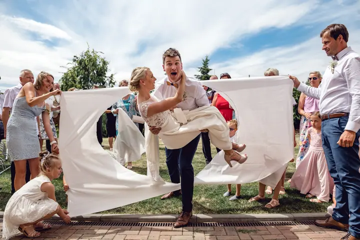

jedna
Svatební fotografie
Svatby fotím po celé ČR a opravdu rád. Je to den plný emocí, atmosféry a dobré nálady, a přesně to chci mít na vašich fotkách.

Svatební a produktový fotograf · Olomouc, Brno, Ostrava

Jmenuji se Jakub Šnábl a svatby fotím po celé ČR a opravdu rád. Mám rád den plný emocí, atmosféry a dobré nálady, protože to všechno pak najdete i na fotkách. Doma jsem v Olomouci, ale za vámi rád přijedu kamkoliv.
Více o mně
Co fotím
jedna
Svatby fotím po celé ČR a opravdu rád. Je to den plný emocí, atmosféry a dobré nálady, a přesně to chci mít na vašich fotkách.
dvě
Portrétní focení, kde mi jde o přirozený výraz a čisté světlo. Na každé fotce si dávám záležet.
tři
Fotím produkty a reklamu pro firmy z Olomouce, Brna, Ostravy i odjinud. Výsledkem jsou čisté fotky, které můžete hned použít na web nebo do katalogu.
Fotím architekturu, interiéry, referenční stavby i auta. Hodí se pro architekty, stavební firmy a všechny, kdo potřebují svou práci ukázat v nejlepším světle.

Je to nádherný den plný emocí

Za objektivem
Jsem svatební a portrétní fotograf z Olomouce. Kromě svateb fotím také produkty, reklamu, architekturu a interiéry, takže znám jak živou atmosféru velkého dne, tak práci s klidem a přesným světlem.
Jsem perfekcionista a myslím si, že právě to mě posouvá dopředu. Kdybych byl se svou prací stoprocentně spokojený, zastavil bych se. Mým cílem je se té hranici co nejvíc přiblížit a dělám pro to všechno.
Na svatbách mě nejvíc baví lidé a jejich radost. Fotil jsem i svatby svých kamarádů a vždycky se snažím, aby se se mnou všichni cítili v pohodě. Pak jsou i fotky přirozené a veselé :o)
Jakub
Napište mi přes formulář nebo zavolejte. Domluvíme se na termínu a ověřím, jestli mám ten den volno.
Řekněte mi, jak bude váš den vypadat, kde se bude konat a na čem vám záleží. Podle toho si naplánujeme časy i místa na focení.
Jsem s vámi a fotím emoce, atmosféru i detaily. Na společné focení si najdeme hezké místo a dobré světlo.
Fotky pečlivě vyberu a upravím, aby byly co nejblíž mé představě o dokonalosti. Pak je dostanete k uložení i ke sdílení.
Portfolio
Fotografie jsou ilustrační
Otázky
Sídlím v Olomouci, ale svatby fotím po celé ČR. Mám za sebou svatby v Olomouci, ve Vyškově, v Čeladné i v Polsku.
Ano. Fotím také portréty, produkty a reklamu, architekturu, interiéry a auta.
Cena záleží na délce focení a na tom, co od něj čekáte. Napište mi, jak bude váš den vypadat, a pošlu vám nabídku na míru.
Nejjednodušší je vyplnit kontaktní formulář nebo objednávku na webu, případně mi zavolat. Termín vám potvrdím co nejdřív.
Napište pár vět o tom, co si představujete. · +420 775 012 130